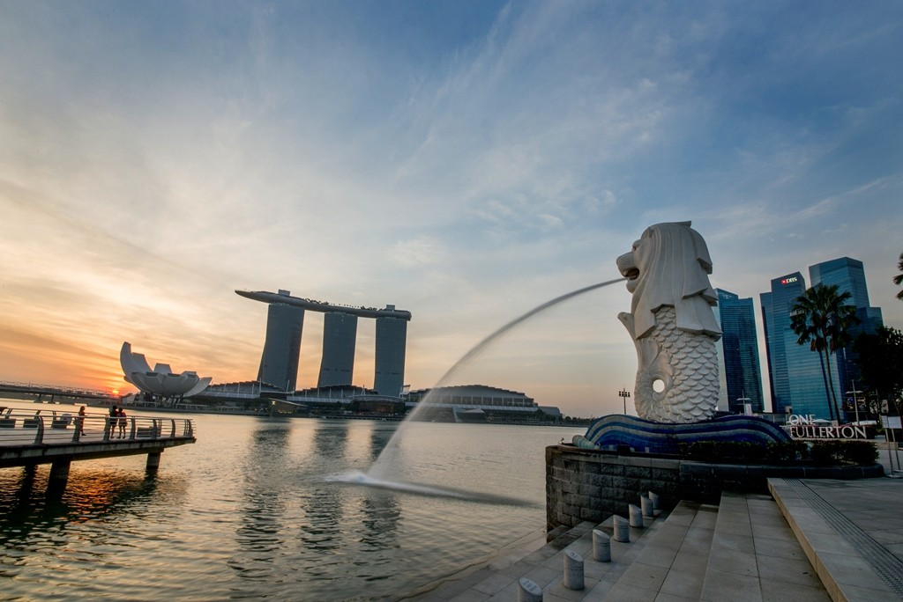

Welcome to Singapore!
"Singapore is a dynamic and diverse city-state located at the southern tip of the Malay Peninsula in Southeast Asia. Renowned for its blend of modernity and tradition, lush green spaces, and multicultural society, Singapore offers a wealth of experiences for travelers. Singapore is widely recognized as one of the safest cities in the world, thanks to its strict law enforcement, low crime rates, and overall emphasis on public safety." - ChatGPT, 2024
While there are four official languages in Singapore (English, Mandarin, Malay, and Tamil), English is the main language of administration and is widely spoken, so it should be pretty convenient for international travelers. There are only two types of weather in Singapore: Hot or Wet. The average temperature is around 30 degree celsius. It is generally a good idea to travel around with an umbrella either to block the sun or the rain. See the latest weather forecast here.
Disclaimer: I have had given recommendations to various people on multiple occasions so I thought it would be nice to collate it somewhere (this page!) so that I can just point to a link in the future. The information below are seeded with my biased opinions and recommendations. If you tried something and liked it, or if have new updated information, please feel free to ping me. I will try to incorporate your suggestion or update the information below!